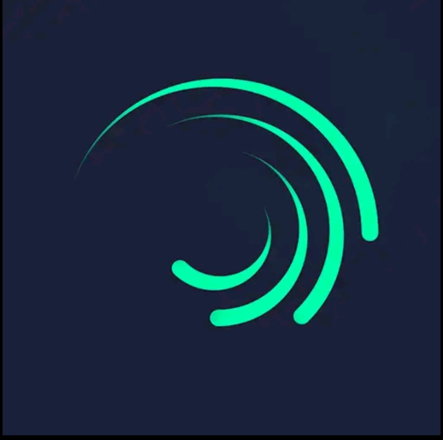

📱 ستوريات لايت موشن: المحتوى الذي يسيطر على تيك توك وإنستاغرام 🎬
في عصر السرعة، أصبح الفيديو القصير هو الوسيلة الأقوى للتواصل، وخصوصًا عبر منصات مثل تيك توك وإنستاغرام. من بين هذه الفيديوهات، برزت ستوريات لايت موشن كأحد أكثر الأنواع انتشارًا وإبداعًا.
💡 ما هو تطبيق Alight Motion؟
تطبيق Alight Motion هو أداة تصميم احترافي لإنشاء ستوريات وفيديوهات بحركة مميزة، نصوص متحركة، موسيقى، تأثيرات بصرية قوية، وأكثر.
🔥 لماذا ستوريات لايت موشن شائعة جدًا؟

- ✅ تصميم احترافي في ثوانٍ
- ✅ تناسب جميع المحتويات
- ✅ سهلة التخصيص
- ✅ تلائم الترندات الموسيقية
📦 ما الذي نقدمه لك هنا؟
نحن نوفر لك حزمة مميزة من ستوريات لايت موشن الجاهزة لتستخدمها مباشرة على التطبيق:
- 🎯 قوالب قابلة للتعديل
- 📄 ملفات بصيغة
.xmlأو.alm - 📱 تعمل على الهاتف بسهولة
- 💥 تأثيرات جاهزة + خطوط
🎯 لمن هذا المحتوى؟
✔️ صناع المحتوى
✔️ منشئو الاقتباسات
✔️ المبتدئون في التصميم
✔️ أي شخص يريد ستوريات جذابة
📥 تحميل الملفات
👇 اضغط هنا لتحميل الحزمة:
download
📌 ملاحظة: تأكد من تثبيت تطبيق Alight Motion على جهازك قبل فتح الملفات.
✨ نصيحة إضافية
دمج القوالب مع مقاطع تيك توك الرائجة = نتائج مذهلة 🚀
⚡ خلاصة
لايت موشن هو مفتاحك لصناعة محتوى سريع وجذاب. لا تنتظر، حمّل وابدأ الآن!